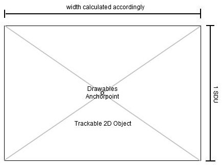
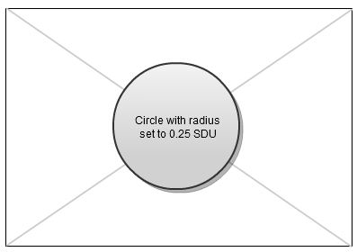

SDU and DBS
Scaled Distance Units (SDUs)
In AR applications, the term "size of an object" cannot be defined just in pixels or similar size measurements. Unlike in 2-dimensional applications, such as maps, the size of an object inherently depends on the distance from the viewer to the object.
Imagine a virtual 2-dimensional logo which should be placed right on top of a certain store location. In a map-based application, the size can easily be defined by specifying the width and height of the logo in pixels. In AR applications, the logo should appear as big as the building itself, which is dependent on the distance in a natural way. Additionally for geobased usecases objects should be readable even if far away. We use a distance based scaling (see below) to accomplish this.
The term "pixels" or physical units cannot be used in AR applications, as they are defined in a static way and do not allow the application to scale the objects in the desired way. Thus, the Wikitude ARchitect introduces Scaled Distance Units (SDU). SDUs are defined not only in relation to the object's size itself, but also in relation to the distance from the viewer to the object itself.
For drawables attached to GeoObjects, 1 SDU is defined as the screen-size of an object which is exactly 1 meter high and located 10 meters away from the viewer. If a drawable's width is defined as 5 SDU, it will exactly overlap an object which is 5 meters wide and is located in 10 meters distance.
For drawables attached to Trackable2DObjects, SDUs are determined by the underlying trackable's size. The drawables anchor point will be set to the center of the Trackable2DObject, and 1 SDU is defined to be the height of the image, as described in the figure below:

A circle with radius set to 0.25 will then be rendered accordingly like shown in the image below: 
Distance Based Scaling (DBS)
Another important concept of an AR application is "Distance Based Scaling". Think about the logo again, which represents the store location of a certain brand. If the viewer is about 10 meters away and looking at the store, the logo will perfectly overlap the building, given that we have set the drawable's width and height to the right SDUs. Now, let's put the view further away from the store location. Without the concept of DSB, the logo will quickly vanish from the screen, as it will be too small to see - especially when the SDUs are not set to a high value. A similar situation appears when we are moving towards the location - the logo will soon appear very big and obstruct the entire screen.
To avoid situations, where drawables are only clearly visible in a certain viewing distance or are otherwise too big or too small to recognize respectively, the Wikitude ARchitect introduces a concept called Distance Based Scaling (DBS). It ensures that drawables do not exceed certain limits of their original appearance.
We define two values, cutoff_min and cutoff_max.
cutoff_min is set to 10 meters and defines the viewing distance at which the drawables will not be scaled anymore. Regardless whether the viewing distance is 10 meters or even closer to the original location, the drawable will still have the same size on the screen. This avoids drawables obstructing the entire screen.
cutoff_max is set to 20 kilometers and defines the viewing distance beyond which the drawables will not be scaled anymore. The drawable will still appear in the same size on the screen, regardless if the distance to the object is 20 kilometers, or even more. This avoids drawables getting too small to see on the screen.
The cutoff_max size of the drawable is set to 10% of its size at cutoff_min (the defined SDU-value), resulting in any drawable not appearing smaller than 10% of its size if the object was only 10 meters away.
Between cutoff_min and cutoff_max, the objects are scaled based on a scaling function of x^(0.2). The effect of this particular scaling function is that drawables representing near objects are downscaled fairly quickly as the user is moving away from the object. The further the user moves away from the object, the lesser the loss of size will be visible for the user, to allow a smooth user experience.